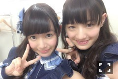

| 2015/08 23 Sun | ひめたん-0o0-その568 |

前髪分けてみた(・∀・)へへ
福岡3公演終わりましたー！！
来てくださったみなさん
本当にありがとうございました！
1年ぶりの福岡でしたが
持ち歌も増えて、経験も積んで
あれから成長した姿を見てもらえてたら
嬉しいな～なんて思います(´｡•ω•｡`)
そしてまた来年も開催できますように。
博多弁好きっちゃ♡

かなちゃんブログ見たよー＼(^o^)／
ちゃなりんもかわいいよー＼(^o^)／
ひめ知らぬ間にかなちゃんの
肩を借りていたんだね。
ふっふっふ
ふーっふっふっふ
ばーん！
どや！この寝顔！美しい！
実はかなちゃんもある日
ひめちゃんの肩で
寝てたんだよ(・∀・)かわいい
寝顔ハンターの寝顔なんて
レアじゃない？
ひめはハントしたよ！！
中田推しのみなさんごめんね♡
果たして何秒私に
もたれかかってくれてたんだろう
私も今度は数えてみなきゃ(・∀・)
ヘアは
1公演目 編み込みツイン
2公演目 ハーフアップ
3公演目 サイドポニー
未央ちゃんが着てるのが
福岡会場限定Tシャツ。
次すぐ大阪公演ですね。城ホール。
城ホールでいつかやりたい～って
口にしてきた目標だった場所です
ツアーも終盤に差し掛かろうとしています
ここから先は大きな会場になります
もうひとつ気持ちを持っていかなきゃ。
みんなのフィジカル、メンタル、
不安要素もありますが
支え合って頑張ろう＼(^o^)／
来てくださるみなさん
一緒に楽しみましょう！！

 ひめたんが学生時代にやった印象深い
ひめたんが学生時代にやった印象深い
夏休みの宿題を教えてください（笑）
自由研究で、プリンの秘密を調べました！
ここで語るほど大したことないので
聞かないで下さい......。
僕いつも喉から
風邪引いちゃうタイプなんですが
ひめたんはどうですか？
何だろう。私も喉からかな？
鼻も弱いです。
生ちゃんが休業してた期間の遠征は
寂しくなかったですか？
寂しかったよ！去年のツアー！
こうしてみんなでツアー回ってるけど
みんなが揃うのは当たり前じゃないんだな
ってことだよね(´｡•ω•｡`)
ひめたんが思う東京と広島との違いは？
街並みも、空気も、人もみんな違う。
東京にいるとスイッチが入るし
広島に帰ると何だか安らぐ。
ああまた帰りたいな。プライベートでも。
食戟のソーマでは誰が好き？
伊武崎くん！
みんなは？みんなはー？
ファンになりたいです(´ . .̫ . `)
ずっと気になってました
古いファンの方に失礼かな
古いファンの方に失礼かな
そんなことないよ～！
ひめのこと見つけてくれてありがとう♡
これからたくさん知ってほしいな(´｡•ω•｡`)
流し目。

らじらー！サンデー
次週やっと乃木坂回。
ああああああ長かったよーーー
早くオリラジさんとすみたそさんと
らじらースタッフのみんなに会いたいよーー
30日は神宮球場でのライブがあるので
公演終了後の楽屋裏を生中継でお届けしたり
そのままゲストを連れてNHKに向かいます
どんな放送になるかわからないけれど
会場の熱がそのまま伝わるような
中継になったら楽しいよね( ˇωˇ )
ツアーの感想聞かせてくださーい！
福岡来てくれた人は忘れないうちに、
今すぐにでも！宛先はこちら。
今夜の乃木坂工事中
明日のNOGIBINGO!5
次回の初森ベマーズ
出てます！観てください！な！
(＊´・ω・＊)
コメント(868)
2015/08/23 23:30